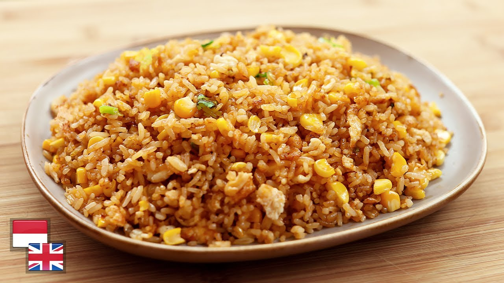

Nasi Goreng Telur
Nasi Goreng Standar
cara Membuat Nasi Goreng Telur:
1. Siapkan Bahan berupa nasi, telur, kecap manis, minyak, penyedap rasa, bawang-bawang
2. masukan minyak sedikit
3. masukkan telur, lalu aduk-aduk
4. masukkan nasi lalu kecap, lalu penyedap rasa, kemudian campur
5. hidangkan di piring, nasi goreng telur siap dihidangkan
6. Goreng telur dadar secara terpisah
7. Taruh di atas telur